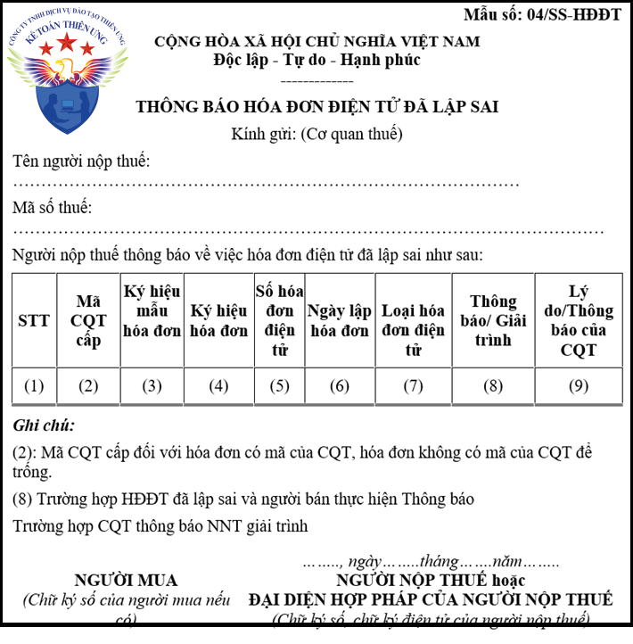
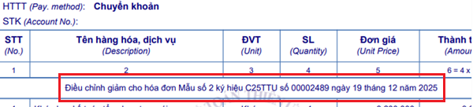
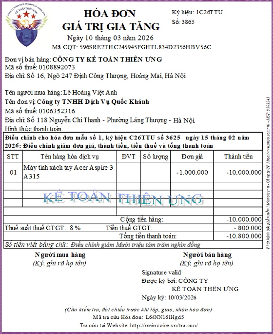
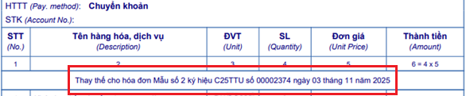
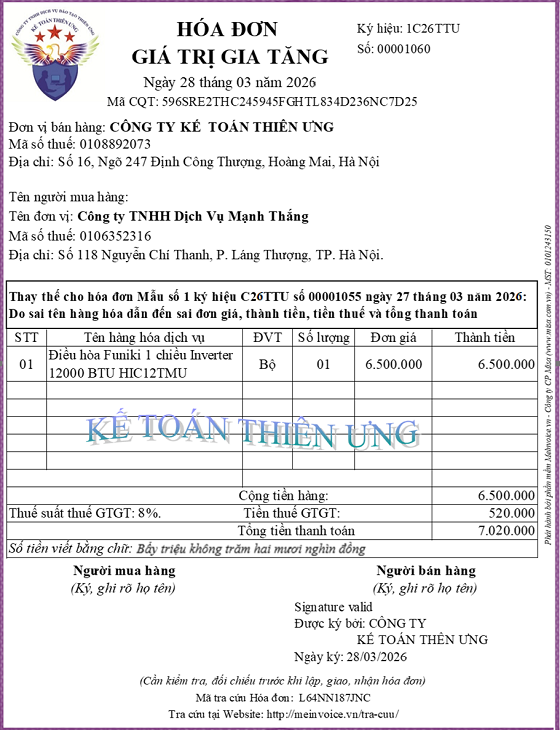
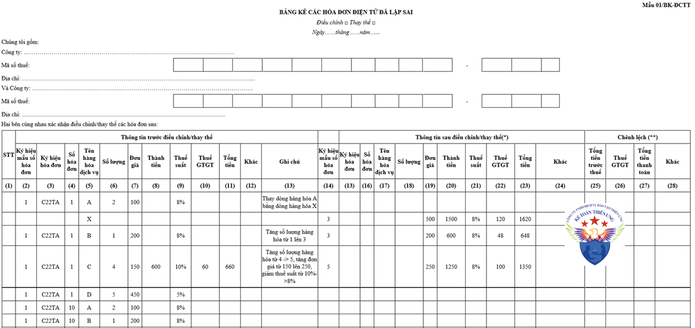
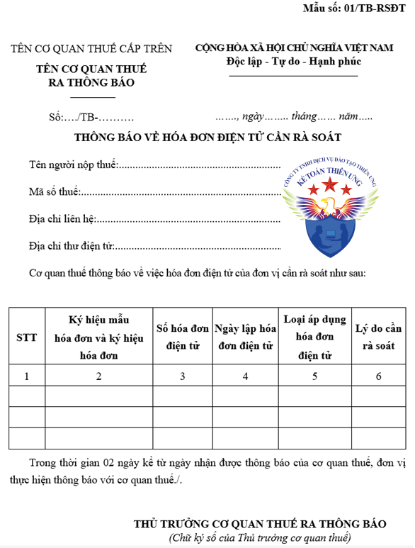
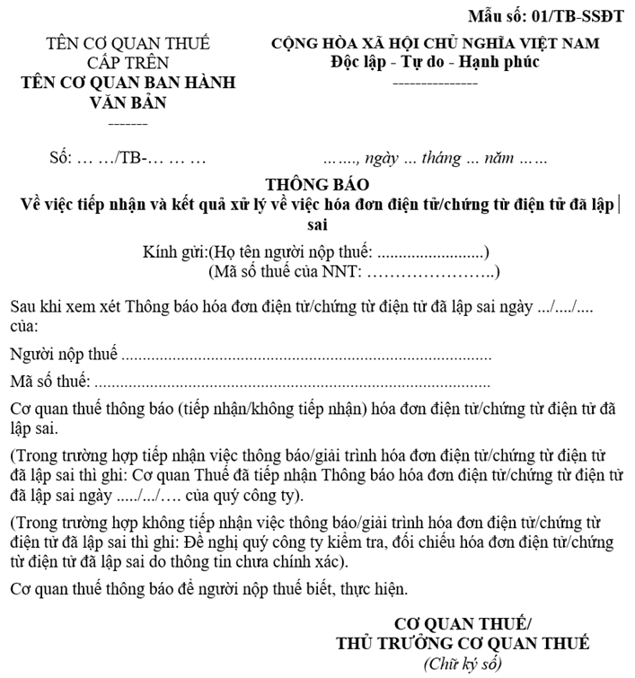

Hóa đơn lập sai ngày tháng năm, sai tên người mua hàng, sai tên công ty, sai địa chỉ, sai mã số thuế, sai số tiền, sai tên hàng hóa, sai đơn vị tính... Đó là lỗi mà rất nhiều kế toán gặp phải. Kế toán Diệu Tâm xin hướng dẫn cách xử lý hóa đơn viết sai chi tiết từng trường hợp trên.
Căn cứ theo khoản 13 Điều 1 của Nghị định 70/2025/NĐ-CP: sửa đổi, bổ sung một số điều của Nghị định số 123/2020/NĐ-CP ngày 19/10/2020 của Chính phủ quy định về hóa đơn, chứng từ
“Điều 19. Thay thế, điều chỉnh hóa đơn điện tử
1. Trường hợp phát hiện hóa đơn điện tử đã lập sai (bao gồm hóa đơn điện tử đã được cấp mã của cơ quan thuế, hóa đơn điện tử không có mã của cơ quan thuế đã gửi dữ liệu đến cơ quan thuế) thì người bán thực hiện xử lý như sau:
a) Trường hợp có sai về tên, địa chỉ của người mua nhưng không sai mã số thuế, các nội dung khác không sai thì người bán thông báo cho người mua về việc hóa đơn đã lập sai và không phải lập lại hóa đơn. Người bán thực hiện thông báo với cơ quan thuế về hóa đơn điện tử đã lập sai theo Mẫu số 04/SS-HĐĐT Phụ lục IA ban hành kèm theo Nghị định này.

b) Trường hợp có sai mã số thuế; sai về số tiền ghi trên hóa đơn, sai về thuế suất, tiền thuế hoặc hàng hóa ghi trên hóa đơn không đúng quy cách, chất lượng thì có thể lựa chọn điều chỉnh hoặc thay thế hóa đơn điện tử như sau:
b.1) Người bán lập hóa đơn điện tử điều chỉnh hóa đơn đã lập sai.
Hóa đơn điện tử điều chỉnh hóa đơn điện tử đã lập sai phải có dòng chữ “Điều chỉnh cho hóa đơn Mẫu số... ký hiệu... số... ngày... tháng... năm”.
|
 |
=>>> Ví dụ:

b.2) Người bán lập hóa đơn điện tử mới thay thế cho hóa đơn điện tử lập sai.
Hóa đơn điện tử mới thay thế hóa đơn điện tử đã lập sai phải có dòng chữ “Thay thế cho hóa đơn Mẫu số... ký hiệu... số... ngày... tháng... năm”.
|
 |
=>>> Ví dụ:

Người bán ký số trên hóa đơn điện tử mới điều chỉnh hoặc thay thế cho hóa đơn điện tử đã lập sai sau đó
- Người bán gửi cho người mua (đối với trường hợp sử dụng hóa đơn điện tử không có mã của cơ quan thuế)
- Hoặc gửi cơ quan thuế để cơ quan thuế cấp mã cho hóa đơn điện tử mới để gửi cho người mua (đối với trường hợp sử dụng hóa đơn điện tử có mã của cơ quan thuế).
LƯU Ý: Trường hợp trong tháng người bán đã lập sai cùng thông tin về người mua, tên hàng, đơn giá, thuế suất trên nhiều hóa đơn của cùng một người mua trong cùng tháng thì người bán được lập một hóa đơn điều chỉnh hoặc thay thế cho nhiều hóa đơn điện tử đã lập sai trong cùng tháng và đính kèm bảng kê các hóa đơn điện tử đã lập sai theo Mẫu số 01/BK-ĐCTT Phụ lục IA ban hành kèm theo Nghị định này.
|
 |
Trước khi điều chỉnh, thay thế hóa đơn điện tử đã lập sai theo quy định tại điểm b khoản này, đối với
- Trường hợp người mua là doanh nghiệp, tổ chức kinh tế, tổ chức khác, hộ kinh doanh, cá nhân kinh doanh thì người bán và người mua phải lập văn bản thỏa thuận ghi rõ nội dung sai;
- Trường hợp người mua là cá nhân thì người bán phải thông báo cho người mua hoặc thông báo trên website của người bán (nếu có). Người bán thực hiện lưu giữ văn bản thỏa thuận tại đơn vị và xuất trình khi có yêu cầu.
c) Đối với ngành hàng không thì hóa đơn đổi, hoàn chứng từ vận chuyển hàng không được coi là hóa đơn điều chỉnh mà không cần có thông tin “Điều chỉnh tăng/giảm cho hóa đơn Mẫu số... ký hiệu... ngày... tháng... năm”. Doanh nghiệp vận chuyển hàng không được phép xuất hóa đơn của mình cho các trường hợp hoàn, đổi chứng từ vận chuyển do đại lý xuất.
2. Trường hợp cơ quan thuế phát hiện hóa đơn điện tử có mã của cơ quan thuế hoặc hóa đơn điện tử không có mã của cơ quan thuế đã lập sai thì cơ quan thuế thông báo cho người bán theo Mẫu số 01/TB-RSĐT Phụ lục IB ban hành kèm theo Nghị định này để người bán kiểm tra nội dung sai.
|
 |
=>>> Người bán có trách nhiệm rà soát theo thông báo của cơ quan thuế và thực hiện điều chỉnh, thay thế hóa đơn theo quy định tại khoản 1 Điều này.
3. Trường hợp người bán thực hiện thông báo với cơ quan thuế theo Mẫu số 04/SS-HĐĐT Phụ lục IA ban hành kèm theo Nghị định này quy định tại điểm a khoản 1 Điều này thì Cổng thông tin điện tử của Tổng cục Thuế tự động thông báo về việc tiếp nhận theo Mẫu số 01/TB-SSĐT Phụ lục IB ban hành kèm theo Nghị định này.
|
 |
4. Hóa đơn để điều chỉnh hóa đơn điện tử đã lập trong một số trường hợp như sau:
a) Đối với các hóa đơn điện tử đã lập khi bán hàng hóa, cung cấp dịch vụ không bị sai nhưng khi thanh toán thực tế hoặc khi quyết toán có sự thay đổi về giá trị, khối lượng trên cơ sở kết luận của cơ quan nhà nước có thẩm quyền theo quy định của pháp luật có liên quan thì người bán thực hiện lập hóa đơn điện tử mới đối với số chênh lệch qua quyết toán phản ánh theo đúng nghiệp vụ kinh tế phát sinh (phát sinh giảm ghi âm (-) hoặc phát sinh tăng ghi dương (+) phù hợp với thực tế).
b) Trường hợp việc chiết khấu thương mại căn cứ vào số lượng, doanh số hàng hóa, dịch vụ thì số tiền chiết khấu của hàng hóa, dịch vụ đã bán được tính điều chỉnh trên hóa đơn bán hàng hóa, cung cấp dịch vụ của lần mua cuối cùng hoặc kỳ tiếp sau đảm bảo số tiền chiết khấu không vượt quá giá trị hàng hóa, dịch vụ ghi trên hóa đơn của lần mua cuối cùng hoặc kỳ tiếp sau hoặc được lập hóa đơn điều chỉnh kèm theo bảng kê các số hóa đơn cần điều chỉnh, số tiền, tiền thuế điều chỉnh. Bảng kê được lưu tại đơn vị và xuất trình khi cơ quan thuế hoặc cơ quan nhà nước có thẩm quyền yêu cầu. Căn cứ vào hóa đơn điều chỉnh, bên bán và bên mua kê khai điều chỉnh doanh thu mua, bán, thuế đầu ra, đầu vào tại kỳ lập hóa đơn điều chỉnh.
c) Xử lý hóa đơn điện tử trong trường hợp trả lại hàng hoá, dịch vụ:
c.1) Trường hợp trả lại hàng hóa: Trường hợp người mua trả lại toàn bộ hoặc một phần hàng hóa (bao gồm cả trường hợp đổi hàng làm thay đổi giá trị của hàng hóa đã mua) thì người bán lập hóa đơn điều chỉnh, trừ trường hợp các bên có thỏa thuận về việc người mua lập hóa đơn khi trả lại hàng hóa thì người mua lập hóa đơn điện tử giao cho người bán; người bán, người mua thực hiện nghĩa vụ thuế theo quy định khi bán hàng hóa.
c.2) Trường hợp hàng hoá là tài sản thuộc diện phải đăng ký quyền sử dụng, quyền sở hữu theo quy định của pháp luật và tài sản đã được đăng ký theo tên người mua thì khi trả lại hàng hoá đảm bảo phù hợp với pháp luật liên quan, nếu người mua là đối tượng sử dụng hoá đơn điện tử thì người mua thực hiện lập hoá đơn trả lại hàng cho người bán.
c.3) Đối với trường hợp hoàn phí, giảm phí, giảm hoa hồng môi giới bảo hiểm và các khoản chi để giảm thu khác theo quy định của pháp luật kinh doanh bảo hiểm: Căn cứ vào hóa đơn đã lập và biên bản hoặc thỏa thuận bằng văn bản ghi rõ số tiền phí bảo hiểm được hoàn, giảm (không bao gồm thuế giá trị gia tăng), số tiền thuế giá trị gia tăng theo hóa đơn thu phí bảo hiểm mà doanh nghiệp bảo hiểm đã thu (số ký hiệu, ngày, tháng của hóa đơn), lý do hoàn, giảm phí bảo hiểm thì người bán lập hóa đơn điều chỉnh giao cho khách hàng tham gia bảo hiểm, không phân biệt đã chi tiền hay chưa chi tiền. Trên hóa đơn ghi rõ số tiền phí bảo hiểm hoàn, giảm, lý do hoàn, giảm. Biên bản này được lưu giữ cùng với hóa đơn thu phí bảo hiểm tại doanh nghiệp và xuất trình khi có yêu cầu.
Đối với các trường hợp quy định tại điểm c.1, điểm c.2, điểm c.3, người bán, người mua phải có đầy đủ hồ sơ, chứng từ liên quan đến việc trả lại hàng hoá, dịch vụ và phải xuất trình khi được yêu cầu.
c.4) Trường hợp người bán đã lập hóa đơn khi thu tiền trước khi cung cấp dịch vụ hoặc lập hóa đơn thu tiền đối với hoạt động kinh doanh bất động sản, xây dựng cơ sở hạ tầng, xây dựng nhà để bán, nhà chuyển nhượng sau đó phát sinh việc huỷ hoặc chấm dứt giao dịch và hủy một phần việc cung cấp dịch vụ thì người bán thực hiện điều chỉnh hóa đơn điện tử đã lập theo quy định tại điểm b.1 khoản 1 Điều này.
d) Trường hợp tổ chức tín dụng, tổ chức cung ứng dịch vụ thanh toán không dùng tiền mặt (sau đây gọi là tổ chức cung ứng dịch vụ thanh toán) đã lập hóa đơn thu phí dịch vụ thanh toán thẻ ngân hàng sau đó phát sinh giao dịch hoàn phí dịch vụ thanh toán thẻ ngân hàng cho đơn vị chấp nhận thẻ thì tổ chức tín dụng, tổ chức cung ứng dịch vụ thanh toán thực hiện lập hóa đơn điều chỉnh theo quy định tại khoản 1 Điều này, trên hóa đơn điều chỉnh không cần có thông tin “Điều chỉnh cho hóa đơn số.... Mẫu số... ký hiệu... ngày...tháng...năm.”
đ) Đối với trường hợp cung cấp dịch vụ viễn thông mà khách hàng sử dụng thẻ trả trước dịch vụ viễn thông di động để thanh toán cho cước dịch vụ trả sau, nhắn tin ủng hộ từ thiện, các dịch vụ viễn thông khác được chấp nhận thanh toán bằng thẻ trả trước dịch vụ viễn thông di động theo quy định của pháp luật và khi bán thẻ cào, hoàn thành cung cấp dịch vụ doanh nghiệp viễn thông đã thực hiện lập hóa đơn giá trị gia tăng theo quy định, doanh nghiệp viễn thông căn cứ vào dữ liệu trên bảng kê hoặc biên bản làm việc với đối tác, khách hàng để thực hiện lập hóa đơn điều chỉnh.
5. Áp dụng hóa đơn điều chỉnh, thay thế
a) Trường hợp hóa đơn điện tử đã lập sai và người bán đã xử lý theo hình thức điều chỉnh hoặc thay thế theo quy định tại điểm b khoản 1 Điều này, sau đó lại phát hiện hóa đơn sai thì các lần xử lý tiếp theo người bán sẽ thực hiện theo hình thức đã áp dụng khi xử lý lần đầu;
b) Trường hợp theo quy định hóa đơn điện tử được lập không có ký hiệu mẫu số hóa đơn, ký hiệu hóa đơn, số hóa đơn đã lập sai thì người bán chỉ thực hiện lập hóa đơn điều chỉnh;
c) Đối với nội dung về giá trị trên hóa đơn điều chỉnh thì: điều chỉnh tăng (ghi dấu dương), điều chỉnh giảm (ghi dấu âm) đúng với thực tế điều chỉnh;
d) Hóa đơn điều chỉnh, hóa đơn thay thế đối với trường hợp quy định tại điểm b khoản 1 Điều này thì người bán, người mua khai bổ sung vào kỳ phát sinh hóa đơn bị điều chỉnh, bị thay thế;
đ) Hóa đơn điều chỉnh đối với trường hợp quy định tại khoản 4 Điều này thì người bán kê khai vào kỳ phát sinh hóa đơn điều chỉnh, người mua kê khai vào kỳ nhận được hóa đơn điều chỉnh.”
----------------------------------------------
Để hiểu rõ hơn và biết cách xử lý các tình huống liên quan đến hóa đơn GTGT cũng như kê khai thuế, các bạn có thể tham gia: Lớp học thực hành kế toán thuế chuyên sâu trên phần mềm HTKK bằng hóa đơn thực tế.